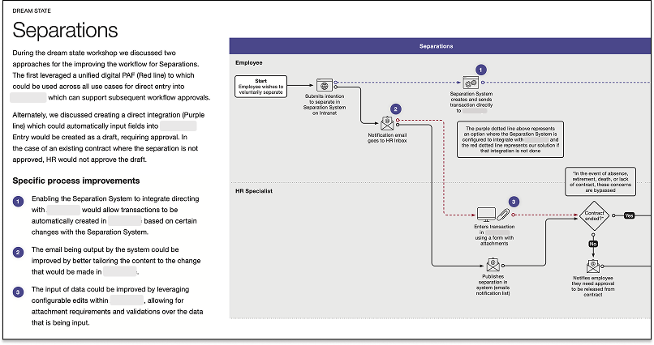
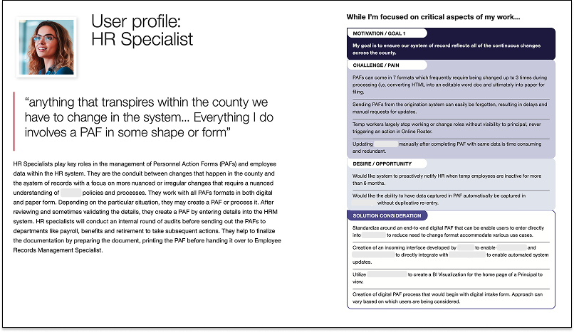
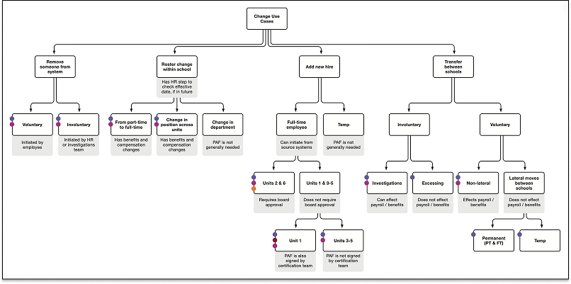
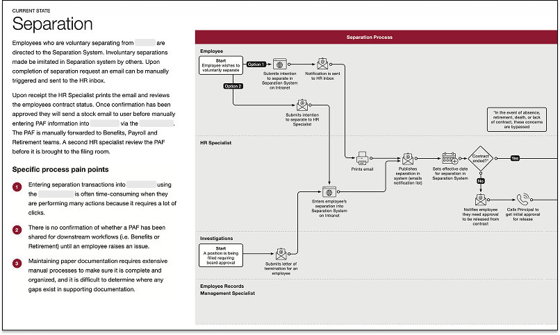

Personnel Process UX
- UX Research

Overview
This UX research project was part of an ongoing initiative to upgrade a school districts software and was conducted to identify immediate needs and long-term objectives to drive transformation in the personnel action processes.
Tools
- Miro
- Adobe InDesign
Roles
- Researcher
- Strategist
User Research
Following in-depth contextual interviews covering their personnel process, we synthesized several main personas including cognitive stacks that highlight the perspectives of the user and suggest solution considerations. Below is an example of one of these personas.
User Persona

Current Processes
We then explored the personnel form process, including how it impacts a variety of common subprocesses. During research interviews, we captured common use cases where a PAFs are created and some of the relationships and variations that need to be supported. From there, we created several workflows to help explore potential opportunities to streamline the process.
Use Cases

Current Workflows

The Problem
Top Issues
1
Highly manual process with significant variations in format and duplicative actions
2
Lack of validations for data and documents lead to perpetual audits
3
Work backlogs are tracked locally resulting in an overall lack of visibility
4
System issues combined with seasonal spikes in volume result in bottlenecks
5
Workflows are developed around paper-centric processes
6
Important secondary roles played by PAFs need consideration
The Solution
Next, we explored the primary use cases of the personnel forms to better understand the role and functions that they perform within current workflows. We also conducted a workshop to discuss a “dream state” for the implementation and how the forms could work as a unified system, exploring the potential for improvements. The result was the creation of new workflows that incorporate the improvements to the process. Below is one example of these workflows.